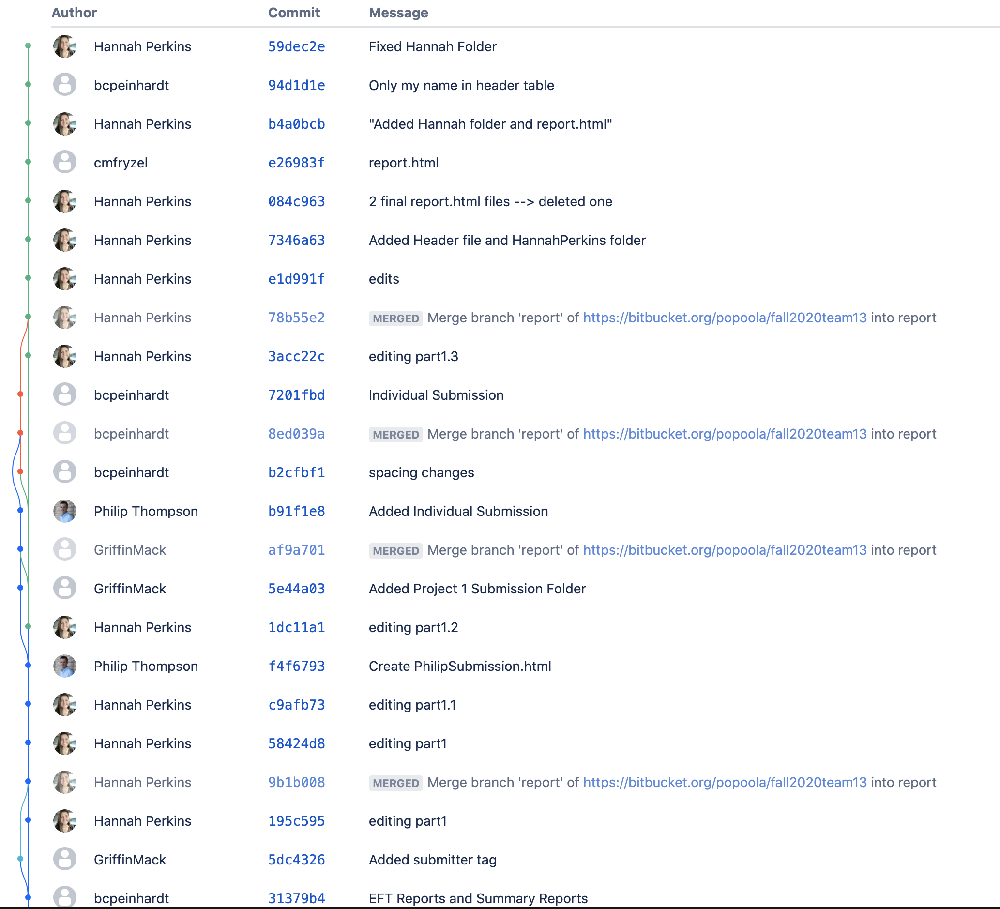

Glossary
- Accounting Procedure - it produces the provider and member reports and electronic funds transfer (EFT) data.
- Accounts Payable - All the accounts that must be paid by ChocAn for services provided to ChocAn members, listed in the Summary Report.
- Electronic Funds Transfer report - A report documenting an electronic transaction
- File of Services Provided - A running file updated throughout the week that contains a list of services provided.
- Interactive Mode - A mode that the software at the ChocAn Data Center is run in. Allows operators to add, update, and delete member and provider records.
- Manager - Person who can produce any report at any time of the week and receives the summary report for accounts payable.
- Manager Terminal - Simulated through the same keyboard and display as the provider terminal. Allows performance of various manager tasks.
- Member - Person who pays a monthly fee in exchange for consultations and treatments from ChocAn providers.
- Member Card - Plastic card given to members embossed with key information. Used with the provider terminal to access ChocAn services.
- Member Number - Unique nine-digit member identification number stored magnetically on member card.
- Member Report - A report sent to each member who utilized one or more ChocAn service during the week.
- Member Status - Indication of a member’s standing with ChocAn. (i.e. Valid, Suspended).
- Membership Fees - a monthly amount paid by members to ChocAn.
- Operator - Person responsible for updating member and provider records.
- Overall Fee - Amount to be paid by ChocAn to all providers for that week.
- Provider Directory - Alphabetically ordered list of service names and corresponding codes and fees
- Provider Number - Unique nine-digit identification number used by a provider to access a Provider Terminal.
- Provider Report - A report sent to each provider that has billed ChocAn during the week. The report contains a list of services he/she provided to ChocAn members.
- Provider Terminal - Similar to a credit card terminal. Specially designed for providers to verify member status.
- Service - A treatment or consultation given to a member by a provider.
- Service Code - Six digit code which corresponds to a specific service or treatment.
- Service Fee - Amount to be paid by ChocAn to a provider for a service/consultation or treatment.
- Service Record - A record of a specific service provided to a ChocAn member.
- Software Product - The ChocAn data processing software.
- Summary Report - A report listing every provider to be paid that week, the number of consultations each had, and his or her total fee for that week.
- Suspended Member - a member who has not paid membership fees for at least a month.
- Total Fee (Total Provider Fee) - Amount to be paid by ChocAn to a specific provider for that week.
System Use Case Diagram

Verify Member Status
Context
The Verify Member Status use case allows a provider to access the member status of a member via the member’s unique ID.
Actors
Provider
Main Success Scenario
- The member’s card is swiped through the terminal by the provider, and the member's unique ID number is read by the software product.
- “Member Valid” appears on the terminal.
Extensions
- 2a. The member's status is suspended
- 2a.1. “Member Suspended” is displayed to the terminal.
- 2a.2. The use case is terminated with an error.
- 2b. The member number is invalid.
- 2b.1. “Invalid number” is displayed to the terminal.
- 2b.2. The use case is terminated with an error.
Bill ChocAn for Service
Context
The Bill ChocAn for Service use case allows a provider to log information about a service provided to a member.
Actors
Provider
Main Success Scenario
- 1. The software product initiates the Verify Member Status use case.
- 2. The terminal prompts the provider to enter the date the service was provided (MM-DD-YYYY).
- 3. The provider keys in the date the service was provided.
- 4. The terminal prompts the provider to enter the service code (six digits).
- 5. The provider keys in the six-digit service code corresponding to the service that was provided.
- 6. The software product displays the name of the service corresponding to the entered service code (up to 20 characters) on the provider’s terminal.
- 6.1. The terminal prompts the provider to verify the displayed service name is correct.
- 7. The terminal prompts the provider to enter any additional optional comments about the service provided (up to 100 characters).
- 7.1. The software product writes a record to the disk containing the ‘Current date and time’, ‘Date service was provided’, ‘Provider Number’, ‘Member Number’, ‘Service Code’ and optionally, ‘Comments.’
- 8. The software product looks up the fee to be paid for the inputted service.
- 8.1. The software product displays the fee on the provider’s terminal.
Extensions
- 1a. The member status is invalid
- 1a.1. The terminal informs the provider and prompts the provider to try again.
- 1a.1.1. The provider selects to attempt again.
- 1a.2. The use case continues at step 1.
- 1a.1.1a. The provider selects not to attempt again and the use case terminates with an error.
- 3a. An invalid date was entered
- 3a.1. The terminal informs the provider and prompts the provider to try again.
- 3a.1.1. The provider selects to attempt again.
- 3a.2. The use case continues at step 2
- 3a.1.1a. The provider selects not to attempt again and the use case terminates with an error.
- 5a. An invalid service code is entered
- 5a.1. The terminal informs the provider.
- 5a.2. The use case continues at step 3
- 6.1a The provider indicates that the service name is not correct
- 6.1a.1. The terminal informs the provider and prompts the provider to try again.
- 6a.1.1. The provider selects to attempt again.
- 6.1a.2. The use case continues at step 4.
- 6a.1.1a. The provider selects not to attempt again and the use case terminates with an error.
- 7a. The provider enters additional comments over 100 characters.
- 7a.1. The terminal informs the provider and prompts the provider to try again.
- 7a.1.1. The provider selects to attempt again.
- 7a.2. The use case continues at step 6
- 7a.1.1a. The provider selects not to attempt again and the use case terminates with an error.
Request Provider Directory
Context
The Request Provider Directory use case allows a provider to request an email with the provider directory attached.
Actors
Provider
Main Success Scenario
- The terminal prompts the provider to enter their email address.
- The provider keys in their email address.
- The software product looks up the provider directory.
- The software product sends the provider directory to the provider’s email address as an attachment.
Extensions
- 2a. An invalid email address is entered
- 2a.1. The terminal informs the provider and prompts the provider to try again.
- 2a.1.1. The provider selects to attempt again
- 2a.2. The use case continues at Step 1.
- 2a.1.1a. The provider selects not to attempt again and the use case terminates with an error.
Produce EFT Data
Context
The Produce EFT Data use case creates a list of electronic transactions and details about those transactions.
Actors
Timer
Main Success Scenario
- 1. The software product produces a file containing the following information for each transaction during the week:
- a. Provider Name
- b. Provider Number
- c. Amounts to be Transferred
- 2. The system writes the report to disk
Extensions
- N/A
Run Main Accounting Procedure
Context
The Run Main Accounting Procedure use case creates reports at the end of the week and writes them to a disk.
Actors
End-of-Week
Main Success Scenario
- The Software Product triggers the use case Produce Provider Report for every provider.
- The Software Product triggers the use case Produce Summary Report.
- The Software Product triggers the use case Produce Member Report for every member.
- The Software Product triggers the use case Produce EFT Report.
Add Provider extends Manage Provider Records
Actors
Operator
Context
The Add Provider use case allows an operator to add a Provider to the ChocAn data system.
Main Success Scenario
- 1. The system creates a new unique Provider number.
- 2. The terminal will prompt the operator to input new Provider information.
- a. Provider name (25 characters)
- b. Provider street address (25 characters)
- c. Provider city (14 characters)
- d. Provider state (2 letter abbreviation)
- e. Provider ZIP code (5 digits)
- 3. The system records the data.
- 4. The terminal displays “Provider Added.”
Extensions
- 2a. The operator enters invalid information
- 2a.1. The terminal informs the operator and prompts the operator to try again.
- 2a.1.1. The operator selects to attempt again.
- 2a.2. The use case continues at step 2.
- 2a.1.1a. The operator selects not to attempt again and the use case terminates with an error.
Delete Provider extends Manage Provider Records
Actors
Operator
Context
The Delete Provider use case allows an operator to delete a provider from the ChocAn data system.
Main Success Scenario
- 1. The system prompts the operator to enter a Provider number.
- 1.1 The operator enters a Provider number.
- 2. The terminal displays that the Provider number is “valid” and displays provider information.
- 3. The system prompts the operator to confirm their choice to delete the provider
- 3.1 The operator confirms their choice
- 4. The system deletes the Provider record.
- 5. The terminal displays “Provider Deleted”.
Extensions
- 2a.1. The terminal informs the operator and prompts the operator to try again.
- 2a.1.1a. The operator selects to attempt again.
- 2a.2. The use case continues at step 1.
- 2a.1.1a. The operator selects not to attempt again and the use case terminates with an error.
- 3.1a.1. The use case is terminated with an error.
Update Provider Records
Context
The Update Provider Records use case adds new providers, deletes providers who have resigned, and updates current provider records.
Actors
Operator
Main Success Scenario
- The operator accesses the terminal.
- The terminal prompts the operator to “Add Provider,” “Delete Provider,” or “Update Provider Information”.
- The operator selects “Add Provider.”
- The terminal prompts the operator to enter a provider number.
- The operator enters a provider number.
- The terminal displays that the provider number is “valid.”
- The terminal will prompt the operator to input new provider information.
- Provider name (25 characters)
- Provider street address (25 characters)
- Provider city (14 characters)
- Provider state (2 letter abbreviation)
- Provider ZIP code (5 digits)
- The software product records the data.
- The terminal displays “Provider Added.”
Extensions
1a. The Software Product is not in interactive mode
1a.1. The Software Product informs the operator that the Software Product is not
in Interactive mode.
1a.2. The use case terminates.
3a. The operator selects “Delete Provider.”
3a.1. The use case continues at step 4.
3b. The operator selects “Update Provider.”
3b.1. The use case continues at step 4.
5a. The operator entered an invalid provider number
5a.1. “Invalid number” will be displayed on the terminal.
5a.2. The use case returns to Step 4.
6a. The operator had selected “Delete Provider.”
6a.1. The software product deletes the provider records.
6a.2. The terminal then displays “Provider Deleted.”
6a.3. The use case terminates.
8a. The operator had selected “Update Provider.”
8a.1. The terminal displays “Provider Updated”.
Update Member Records
Context
The Update Member Records use case adds new member, deletes members who have resigned, and updates current member records.
Actors
Operator
Main Success Scenario
- The operator accesses the terminal.
- The terminal prompts the operator to “Add member,” “Delete member,” or “Update member Information”.
- The operator selects “Add member.”
- The terminal prompts the operator to enter a member number.
- The operator enters a member number.
- The terminal displays that the member number is “valid.”
- The terminal will prompt the operator to input new member information.
- member name (25 characters)
- member street address (25 characters)
- member city (14 characters)
- member state (2 letter abbreviation)
- member ZIP code (5 digits)
- The software product records the data.
- The terminal displays “member Added.”
Extensions
1a. The Software Product is not in interactive mode
1a.1. The Software Product informs the operator that the Software Product is not
in Interactive mode.
1a.2. The use case terminates.
3a. The operator selects “Delete member.”
3a.1. The use case continues at step 4.
3b. The operator selects “Update member.”
3b.1. The use case continues at step 4.
5a. The operator entered an invalid member number
5a.1. “Invalid number” will be displayed on the terminal.
5a.2. The use case returns to Step 4.
6a. The operator had selected “Delete member.”
6a.1. The software product deletes the member records.
6a.2. The terminal then displays “member Deleted.”
6a.3. The use case terminates.
8a. The operator had selected “Update member.”
8a.1. The terminal displays “member Updated”.
Produce Provider Report
Context
The Produce Provider Report use case produces a list of services that a provider administered in a given week.
Actors
Manager, End-of-Week
Main Success Scenario
- 1. The manager accesses the manager’s terminal.
- 2. The terminal displays a menu of options.
- 3. The manager selects “Produce Provider Report”.
- 4. The software product produces a file containing the following information:
- a. Provider Name
- b. Provider Number
- c. Provider City
- d. Provider State
- e. Provider ZIP code
- f. For every service
- i. Date of service
- ii. Date and time that service report was received
- iii. Member name
- iv. Member number
- v. Service code
- vi. Fee to be paid
- g. Total number of consultations (3 digits)
- h. Total fee for week (up to $99,999.99)
- 5. The report is displayed on the terminal.
- 6. The terminal displays the option to print.
- 7. The manager selects to print the report.
- 8. The Provider Report is printed at the terminal.
- 9. The terminal returns to the menu of options.
- 10. The manager exits the terminal.
Extensions
- 1a. The Main Accounting Procedure is running.
- 1a.1 Skip to Step 4.
- 5a. The Main Accounting Procedure is running.
- 5a.1. The software product writes the Provider Report to a disk.
- 5a.2. The use case ends here.
- 7a. The manager selects not to print the report.
- 7a.1 Skip to Step 9.
- 10a. The manager makes no selection.
- 10a.1 The terminal exits after an amount of time of inactivity.
Produce Member Report
Context
The Produce Member Report use case produces a list of each service that a member received in a given week.
Actors
Manager, End-of-Week
Main Success Scenario
- 1. The manager accesses the manager’s terminal.
- 2. The terminal displays a menu of options.
- 3. The manager selects “Produce Member Report”.
- 4. The Software Product produces a file containing the following information:
- a. Member Name
- b. Member Number
- c. Member City
- d. Member State
- e. Member ZIP code
- f. For every service
- i. Date of service
- ii. Provider name
- iii. Service name
- 5. The report is displayed on the terminal.
- 6. The terminal displays the option to print.
- 7. The manager selects to print the report.
- 8. The Member Report is printed at the terminal.
- 9. The terminal returns to the menu of options.
- 10. The manager exits the terminal.
Extensions
- 1a. The Main Accounting Procedure is running.
- 1a.1 Skip to Step 4.
- 5a. Main Accounting Procedure is running.
- 5a.1. The software product writes the Member Report to a disk.
- 5a.2. The use case ends here.
- 7a. The manager selects not to print the report.
- 7a.1 Skip to Step 9.
- 10a. The manager makes no selection.
- 10a.1 The terminal exits after an amount of time of inactivity.
Produce Summary Report
Context
The Produce Summary Report use case produces a summary of the week’s accounts payable.
Actors
Manager, End-of-Week
Main Success Scenario
- 1. The manager accesses the terminal.
- 2. The terminal displays a menu of options.
- 3. The manager selects “Produce Summary Report”.
- 4. The software product produces a file containing the following information:
- a. A list of every provider to be payed that week
- b. Number of consultations for each provider
- c. Total fee for each provider
- d. Number of providers who provided services that week
- e. Total number of consultations from all providers that week
- f. Overall fee
- 5. The report is displayed on the terminal.
- 6. The terminal displays the option to print.
- 7. The manager selects to print the report.
- 8. The Summary Report is printed at the terminal.
- 9. The terminal returns to the menu of options.
- 10. The manager exits the terminal.
Extensions
- 1a. The Main Accounting Procedure is running
- 1a.1. Skip to Step 4.
- 5a. The Main Accounting Procedure is running
- 5a.1. The software product writes the Summary Report to a disk.
- 5a.2. The use case ends here.
- 7a. The manager selects not to print the report.
- 7a.1. Skip to Step 9.
- 10a. The manager makes no selection.
- 10a.1. The terminal exits after an amount of time of inactivity.
BitBucket Statistics
Project 2 Task Distribution
| Name | CWID | Email Address |
|---|---|---|
| Benjamin Peinhardt | 11469936 | bcpeinhardt@crimson.ua.edu |
| Christopher Fryzel | 11971451 | cmfryzel@crimson.ua.edu |
| Philip Thompson | 11990280 | pdthompson5@crimson.ua.edu |
| Griffin Mack | 11713813 | gmack@crimson.ua.edu |
| Hannah Perkins | 11472559 | hperkins1@crimson.ua.edu |
- Benjamin Peinhardt - Glossary, Use Case Description Review and Editing, Produce Summary Report Use Case, Verify Member Status Use Case, report.html (20%)
- Christopher Fryzel - Glossary, UML Use Case Diagram, Use Case Description Review and Editing, Update Member Records Use Case, Produce Provider Report Use Case, Document Management (20%)
- Philip Thompson - Glossary, UML Use Case Diagram, Use Case Description Review and Editing, Produce Member Report Use Case, Update Provider Records Use Case, Document Management (20%)
- Griffin Mack - Glossary, UML Use Case Diagram, Use Case Description Review and Editing, Bill ChocAn Use Case, Request Provider Directory Use Case, report.html, Prototype (20%) (submitter)
- Hannah Perkins - Glossary, UML Use Case Diagram, Use Case Description Review and Editing, Produce EFT Report Use Case, Run Main Accounting Procedure Use Case, report.html (20%)
Product Description
The Main Accounting Procedure, Member Status Verification, Service Billing, Production of Reports, and Updating of Member Records will all be computerized as control processes. The software system will store data on ChocAn data servers. The database will include lists of member objects, provider objects, service codes, and individual services. The ChocAn Software System will allow the communications software to read and write to the system. The System will also allow ACME to read the electronic transaction list and update member statuses. Providers, Managers, and Operators will utilize their respective terminals to input data to the system, which will interface with the ChocAn System through the communications software.
Stereotyped Class Diagram
Main Diagram

Bill ChocAn For Service Activity Diagram
Verify Member Status Activity Diagram
Request Provider Directory Activity Diagram
Manage Reports Activity Diagram
Produce Member Report Activity Diagram
Produce Provider Report Activity Diagram